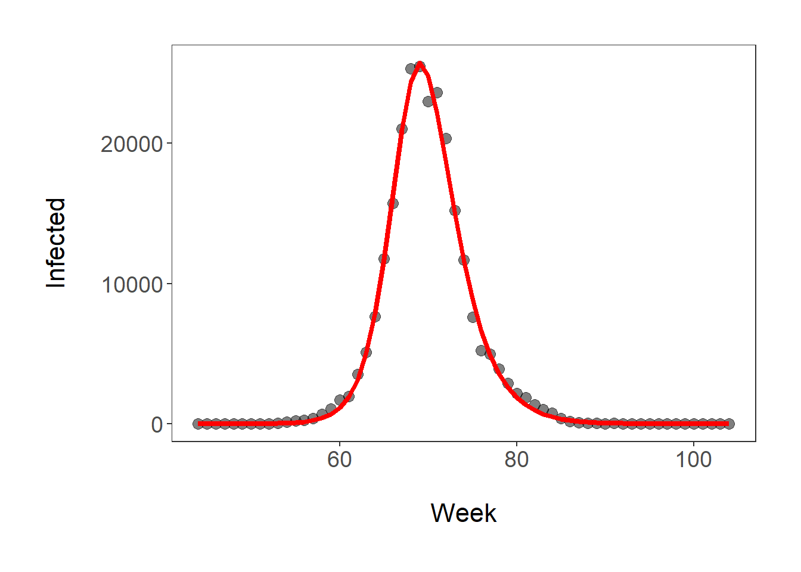
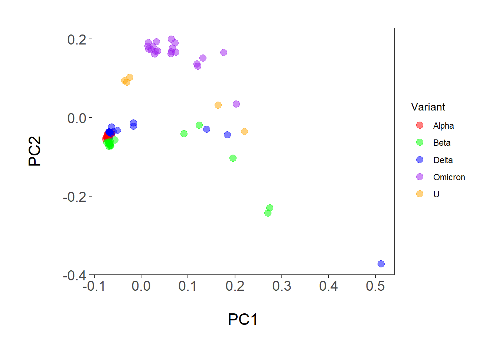

Lab aims and steps:
1. Estimate SIR models for covid-19 variants
2. Classify covid-19 variants and predict Ro for emerging variant
Due: Nothing at the end of this lab. Be sure to save all your code and any questions or tasks in blue text.
For the next two labs we will focus on using tools of machine learning to describe and predict the spread of covid-19. In the first week we will focus on generating SIR models and using classification methods to make predictions about an emerging variant.
To generate SIR models, first we need data on infections. We can get this from a wonderful resource called GISAID, which tracks flu and covid cases. It has the number of infections by country and variant over time. Variant identification is based on genome sequencing of the virus. The data is available by permission only, so please do not share it with anyone outside of this class.
On Canvas, I have provided you with the United States infection data for 4 of the variants of concern: Alpha, Beta, Delta, and Omicron. For each of these variants, you will develop an SIR model and from it estimate the basic reproductive number, Ro.
You should work through ALL of the code in this section for each variant, one at a time (the example code below is for the alpha variant).
First, you need to upload (or download, then upload) the required packages and the data into Rstudio, then do some housecleaning.
# Required packages
require(deSolve)
require(ggplot2)
# upload data
pdata <- read.csv("C:/Users/17163/Documents/DSEE/Labs/Covid/Alpha.csv",header=T)
pdata <- data.frame(as.numeric(pdata$week),as.numeric(pdata$count))
names(pdata) <- c("t","I")
# do some housecleaning
pdata$I[is.na(pdata$I)] <- 0
t <- pdata$t
I <- pdata$I
cases <- pdata$IThe dataset is composed of two variables t (time), or the week of the pandemic, and I, the number of infected individuals. Week 1 started on Dec. 29, 2019 and week 147 is the week of October 16, 2022. Note, I only included data for the Omicron variant through March 6, 2022, which is before the more transmissible subvariants (BA.2-BA.5) began to dominate in the US.
The first thing we need to do to produce the SIR model is to make a function that calculates the change in each category (S, I, and R) per unit of time using the ordinary differential equations.
# Function for calculating S, I, R values
sir <- function(t,x,parms){
S <- x[1]
I <- x[2]
beta <- parms[1]
gamma <- parms[2]
dS <- -(beta*S*I)
dI <- beta*S*I - gamma*I
res <- c(dS,dI)
list(res)
}Note that we are only actually calculating S and I. If we want R, we can get the numbers easily by multiplying I*gamma.
Next, we need to find the values of beta and gamma. Beta (transmission rate) and gamma (recovery rate) are the parameters that dictate the rate at which individuals transition from S to I (beta) and I to R (gamma). To determine the values that best fit the data, we will use the sum of squared error (residuals) values for the number of infected individuals (I). Basically we are calculating how much our model values differ from the actual values.
# function for calculating sum of squared error for optimization
sse.sir <- function(parms0,data) {
data <- data
t <- data[,1]
cases <- data[,2]
beta <- exp(parms0[1])
gamma <- exp(parms0[2])
S0 <- exp(parms0[3])
I0 <- exp(parms0[4])
parms <- c(beta, gamma)
out <- ode(y=c(S0,I0), t, sir, parms, hmax=1/120)
print(sum((out[,3]-cases)^2)) # equation for sum of squared error
}The next step is to find the beta and gamma values (along with initial S and I values) that minimize the sum of squared error. This is called optimization. We aren’t going to go into the weeds on this, but there are many algorithms for optimization and we are using the Nelder and Mead method within the optim() function (use ?optim for more information).
To optimize our parameter values (beta, gamma, S0, and I0) we need to give the algorithm initial values. Unfortunately, most of the algorithms are pretty sensitive to the starting values, so I have provided you with unique initial values for each variants.
When you run the optimization line of code given below R will spit out the sum of squared error values for all of the parameters it is trying. You should notice that the values decrease in size.
The last two lines of code in this set give you the parameter estimates and an estimate of Ro. Here Ro is beta*S0/gamma. It includes initial S (S0) because the ordinary differential equations we used here did not include the population size. Getting the correct pop. size estimate value for a specific variant and group of susceptible individuals is hard, so we use a version of the equations without population size.
# Initial parameter values for optimization
# alpha
parms0 <- c(-9,-9,12,-2.6)
# Omicron
#parms0 <- c(-9.5,-9,12.5,-2.6)
# Delta
#parms0 <- c(-9,-6,12,-2.6)
# Beta
#parms0 <- c(-10,-10,8,-2.6)
# optimization
fit1 <- optim(parms0, sse.sir,data = pdata)## [1] 1.501095e+12
## [1] 1.50112e+12
## [1] 1.475144e+12
## [1] 1.712593e+13
## [1] 1.501227e+12
## [1] 119949650369
## [1] 9332288994
## [1] 1.21095e+11
## [1] 229937352998
## [1] 29764381413
## [1] 84367043158
## [1] 5235971337
## [1] 3263738151
## [1] 3627465494
## [1] 3074885168
## [1] 4034844723
## [1] 3068065033
## [1] 3812623604
## [1] 3397863966
## [1] 4085865863
## [1] 3620383100
## [1] 3398247531
## [1] 3072711744
## [1] 3106790948
## [1] 3008671028
## [1] 3315035106
## [1] 3121789886
## [1] 3070408376
## [1] 3035389317
## [1] 2972002567
## [1] 2934565503
## [1] 2972291092
## [1] 2944016891
## [1] 3007584069
## [1] 2959294229
## [1] 2905043268
## [1] 3524195238
## [1] 3291457604
## [1] 2952326066
## [1] 3090131261
## [1] 2923199445
## [1] 3022956875
## [1] 2927499997
## [1] 2869607810
## [1] 2826840844
## [1] 2863391562
## [1] 2871135065
## [1] 2798878364
## [1] 2741204972
## [1] 2819464314
## [1] 2784585362
## [1] 2717302259
## [1] 2675183871
## [1] 2627753724
## [1] 2874830200
## [1] 2450389621
## [1] 2350496833
## [1] 2211595676
## [1] 2144025863
## [1] 2332700550
## [1] 2166297194
## [1] 3761811040
## [1] 2407799263
## [1] 2495695155
## [1] 2175092906
## [1] 2692748357
## [1] 2215745151
## [1] 2566682143
## [1] 2140951021
## [1] 2205031462
## [1] 2140822463
## [1] 2143961556
## [1] 2120907281
## [1] 2089395745
## [1] 2154844555
## [1] 2179790369
## [1] 2107564323
## [1] 2213061452
## [1] 2104381117
## [1] 2105272576
## [1] 2094071712
## [1] 2070787582
## [1] 2068397859
## [1] 2101674829
## [1] 2081755831
## [1] 2087458056
## [1] 2074541465
## [1] 2136995467
## [1] 2076347644
## [1] 2052927006
## [1] 2037260323
## [1] 2047441592
## [1] 2052189168
## [1] 2057949871
## [1] 2052041839
## [1] 2021158991
## [1] 1995791374
## [1] 1993427179
## [1] 1961084659
## [1] 1971866710
## [1] 1987668706
## [1] 1945117837
## [1] 1919761357
## [1] 1866100737
## [1] 1781729225
## [1] 1864884372
## [1] 1876849635
## [1] 1790101864
## [1] 1828950217
## [1] 1740574920
## [1] 1689317174
## [1] 1604037341
## [1] 1463630042
## [1] 1446388901
## [1] 1265415098
## [1] 1327047040
## [1] 1408470007
## [1] 1360930893
## [1] 1340140176
## [1] 1175291482
## [1] 1412568449
## [1] 1182749189
## [1] 1188995485
## [1] 1238919000
## [1] 1197627849
## [1] 1148336994
## [1] 1306854441
## [1] 1444491380
## [1] 1177517884
## [1] 1129638927
## [1] 1133442882
## [1] 1115509954
## [1] 1112334661
## [1] 1172401954
## [1] 1132971148
## [1] 1071723735
## [1] 1055985227
## [1] 1020142872
## [1] 970034115
## [1] 965399567
## [1] 923270305
## [1] 965878861
## [1] 959004965
## [1] 796342743
## [1] 665447202
## [1] 870821868
## [1] 838553851
## [1] 733914030
## [1] 770759223
## [1] 604933350
## [1] 481807738
## [1] 433459442
## [1] 313156389
## [1] 294696441
## [1] 263754210
## [1] 300756001
## [1] 248919629
## [1] 465357679
## [1] 243970275
## [1] 356488790
## [1] 245692475
## [1] 393408433
## [1] 242780408
## [1] 220496367
## [1] 277134379
## [1] 484698741
## [1] 210856589
## [1] 316614088
## [1] 216191783
## [1] 244330496
## [1] 220378835
## [1] 179102424
## [1] 160237774
## [1] 217702757
## [1] 197680335
## [1] 203984041
## [1] 190758399
## [1] 166595115
## [1] 173783774
## [1] 171089093
## [1] 168850051
## [1] 146375917
## [1] 134586551
## [1] 133525431
## [1] 141868128
## [1] 135344883
## [1] 136125207
## [1] 137041541
## [1] 131911410
## [1] 147220293
## [1] 133567381
## [1] 135180559
## [1] 132043069
## [1] 136876806
## [1] 131710315
## [1] 141744512
## [1] 131071261
## [1] 129969815
## [1] 130815447
## [1] 130483034
## [1] 130202793
## [1] 133306665
## [1] 130546829
## [1] 131485631
## [1] 130509326
## [1] 129210080
## [1] 128593017
## [1] 129262852
## [1] 129309744
## [1] 128167683
## [1] 127441297
## [1] 127298650
## [1] 126790429
## [1] 125183890
## [1] 123272174
## [1] 124462621
## [1] 124990407
## [1] 122307119
## [1] 120821257
## [1] 120967057
## [1] 121677353
## [1] 118019379
## [1] 116758604
## [1] 113621551
## [1] 108951279
## [1] 111848319
## [1] 113220944
## [1] 106310731
## [1] 100679459
## [1] 103485172
## [1] 104263342
## [1] 95497152
## [1] 89541721
## [1] 83104135
## [1] 70933878
## [1] 80280252
## [1] 79960419
## [1] 75686622
## [1] 77070067
## [1] 49552059
## [1] 36989676
## [1] 59839599
## [1] 54068087
## [1] 67303664
## [1] 53775778
## [1] 53260757
## [1] 45699228
## [1] 74088013
## [1] 55497825
## [1] 46467151
## [1] 43633362
## [1] 47006520
## [1] 42792656
## [1] 49778561
## [1] 41792249
## [1] 40575669
## [1] 39739443
## [1] 37571445
## [1] 38220463
## [1] 38988498
## [1] 37906073
## [1] 35301543
## [1] 35346368
## [1] 33466657
## [1] 31525961
## [1] 33122982
## [1] 33562652
## [1] 31745947
## [1] 32310589
## [1] 28527143
## [1] 26368795
## [1] 26096370
## [1] 25173723
## [1] 25177755
## [1] 25448948
## [1] 27419131
## [1] 25247611
## [1] 23509321
## [1] 29114630
## [1] 31203161
## [1] 23937450
## [1] 24145268
## [1] 23630986
## [1] 23570530
## [1] 23225892
## [1] 22869545
## [1] 24551257
## [1] 25608541
## [1] 23001065
## [1] 23150402
## [1] 22833350
## [1] 23551456
## [1] 22946848
## [1] 22915877
## [1] 22725822
## [1] 23853760
## [1] 22719131
## [1] 23005804
## [1] 22779519
## [1] 22847135
## [1] 22750921
## [1] 22670099
## [1] 22728657
## [1] 22695533
## [1] 22673427
## [1] 22617984
## [1] 22618197
## [1] 22866226
## [1] 22657792
## [1] 22615092
## [1] 22646170
## [1] 22580872
## [1] 22549865
## [1] 22666151
## [1] 22616824
## [1] 22537176
## [1] 22501931
## [1] 22573459
## [1] 22557637
## [1] 22493824
## [1] 22461265
## [1] 22398347
## [1] 22308368
## [1] 22328821
## [1] 22379925
## [1] 22330155
## [1] 22345823
## [1] 22219961
## [1] 22149592
## [1] 22085505
## [1] 21978853
## [1] 21984326
## [1] 22058470
## [1] 21957961
## [1] 22077594
## [1] 21862933
## [1] 22041821
## [1] 21779305
## [1] 21801218
## [1] 22116377
## [1] 21884470
## [1] 21807083
## [1] 21810429
## [1] 21639068
## [1] 21494851
## [1] 21777139
## [1] 21709500
## [1] 21544893
## [1] 21602179
## [1] 21491466
## [1] 21445582
## [1] 21302974
## [1] 21189799
## [1] 21051708
## [1] 20813604
## [1] 20872680
## [1] 20998481
## [1] 20822138
## [1] 20882632
## [1] 20472473
## [1] 20385097
## [1] 20226355
## [1] 20093962
## [1] 19996682
## [1] 20069410
## [1] 19455644
## [1] 18933302
## [1] 20284963
## [1] 19648830
## [1] 19404527
## [1] 19391769
## [1] 19400164
## [1] 19301753
## [1] 18697293
## [1] 18412690
## [1] 18278011
## [1] 17946138
## [1] 18108562
## [1] 18207726
## [1] 17572316
## [1] 17590846
## [1] 17388494
## [1] 17678503
## [1] 17568768
## [1] 17472884
## [1] 17496219
## [1] 17401444
## [1] 17521721
## [1] 17364971
## [1] 17151712
## [1] 17061467
## [1] 17243627
## [1] 17182306
## [1] 17878129
## [1] 17226046
## [1] 17163310
## [1] 17147791
## [1] 16909107
## [1] 16715538
## [1] 17001221
## [1] 16969875
## [1] 16802833
## [1] 16870317
## [1] 16749534
## [1] 16783218
## [1] 16547551
## [1] 16393203
## [1] 16328495
## [1] 16132979
## [1] 16509233
## [1] 16390854
## [1] 16046172
## [1] 15835132
## [1] 16819547
## [1] 16370706
## [1] 15947218
## [1] 16030222
## [1] 15845415
## [1] 15916962
## [1] 15745256
## [1] 16253156
## [1] 15689480
## [1] 15813982
## [1] 15597825
## [1] 15628218
## [1] 15923689
## [1] 15725956
## [1] 15616055
## [1] 15614997
## [1] 15749485
## [1] 15663212
## [1] 15699950
## [1] 15639245
## [1] 15651330
## [1] 15622192
## [1] 15604509
## [1] 15603458
## [1] 15578812
## [1] 15563734
## [1] 15587230
## [1] 15584052
## [1] 15550221
## [1] 15524290
## [1] 15560039
## [1] 15556846
## [1] 15518720
## [1] 15495749
## [1] 15507008
## [1] 15514264
## [1] 15471375
## [1] 15438619
## [1] 15426338
## [1] 15390900
## [1] 15451874
## [1] 15440216
## [1] 15369406
## [1] 15319335
## [1] 15359340
## [1] 15364178
## [1] 15315382
## [1] 15303303
## [1] 15307398
## [1] 15302443
## [1] 15279095
## [1] 15316416
## [1] 15219968
## [1] 15173974
## [1] 15403060
## [1] 15268968
## [1] 15212000
## [1] 15224845
## [1] 15167819
## [1] 15136743
## [1] 15129488
## [1] 15124915
## [1] 15047321
## [1] 15010233
## [1] 15096769
## [1] 15068028
## [1] 15065746
## [1] 15050717
## [1] 15033304
## [1] 15029526
## [1] 15119392
## [1] 15038194
## [1] 14977019
## [1] 14941696
## [1] 14993443
## [1] 14982744
## [1] 14943494
## [1] 14958654
## [1] 14966505
## [1] 14950391
## [1] 14907306
## [1] 14886778
## [1] 14880602
## [1] 14866326
## [1] 14952630
## [1] 14910721
## [1] 14866446
## [1] 14871693# parameter values (beta, gamma, S0, I0)
exp(fit1$par)## [1] 5.558239e-06 6.306210e-01 2.079010e+05 2.683183e-01# Estimate of Ro
exp(fit1$par[1])*exp(fit1$par[3])/exp(fit1$par[2])## [1] 1.832421The next code block produces a plot of the observed and optimized model values for the number of infected individuals.
#produce model predicted values to plot
mod.pred <- data.frame(ode(c(exp(fit1$par[3]),exp(fit1$par[4])),t,
sir,c(exp(fit1$par[1]),exp(fit1$par[2])),hmax=1/120))
names(mod.pred) <- c("t","S","I")
#plot observed and modeled predictions
(Iplot <- ggplot(pdata, aes (x = t, y = I)) +
geom_point(alpha = 0.5, size = 3) +
geom_line(data = mod.pred, aes(x = t, y = I), col = "red", size = 1.5) +
theme_bw() +
ylab("Infected\n") +
xlab("\nWeek") +
theme(axis.text.x = element_text(size = 14),
axis.text.y = element_text(size = 14),
axis.title = element_text(size = 16, face = "plain"),
panel.grid = element_blank(),
plot.margin = unit(c(1,1,1,1), units = , "cm")))
After you work through all of the above code for each of the four variants, I want you to alter the code so that you can produce a SINGLE publication quality plot that has the observed and optimized model infection values for all four variants.
Do the Ro values for any of the variants seem too high to low? If you are unsure, Google the current best estimates of the Ro values for each of the variants. What could be possible causes for these inaccurate estimates? Think both about issues with optimization (hint: look at the plots) and violation of SIR assumptions.
Next up, we are going to use sars-cov-2 spike protein sequences to classify variants and, in conjunction with results from part 1, estimate the Ro for an emerging variant. The spike protein plays an important role in binding of the sars-cov-2 virus to human cells, and influences the transmission and virulence of the disease (eg, Huang et al 2020). The protein sequences come from NCBI, which has a decent dashboard for downloading covid related data.
To classify the emerging variant, we are going to use principle component analysis (PCA) to reduce the dimensionality of the data (protein sequences are quite complex), then use the k-nearest neighbor method (remember back to the lecture from lab last week) to determine which of the variants of concern the emerging variant is most similar to and use the variant of concern Ro as a first step prediction of the emerging variant’s basic reproductive number.
The k-nearest neighbor method uses a training dataset (called sequences_train on Canvas), in this case, one where we know the variants (and their Ro values). We use the training dataset to classify the emerging, or unknown, variant (found in the test dataset called sequences_test on Canvas). The training dataset is composed of 20 sequences for each of four variants of concern: Alpha, Beta, Delta, and Omicron. The test dataset is composed of 5 sequences.
Let’s start by getting the needed packages and data into R.
# required packages
require(ape)
require(kmer)
require(class)
require(ggfortify)
# training data, the data come in what is called fasta format
train <- read.FASTA("/Users/17163/Documents/DSEE/Labs/Covid/sequences_train.txt",type="AA")
# training data IDs (variant)
vID <- c(rep("Alpha",10),rep("Delta",10),rep("Beta",10),rep("Omicron",10),
rep("Alpha",10),rep("Beta",10),rep("Delta",10),rep("Omicron",10))
# test data (unknowns)
test <- read.FASTA("/Users/17163/Documents/DSEE/Labs/Covid/sequences_test.txt",type="AA")
# combining training and test data
comb <- c(train,test)
# adding test data unknown variant
vID_t <- c(vID, rep("U",5))The first step in our classification procedure is to produce a distance matrix. This is basically a measure of similarity between the sequences. The higher the number the more similar the sequences. But then we have an 85x85 matrix of distance values. So, we use principal component analysis to reduce the complexity down to two variables using PCA. PCA maximizes the amount of variation that can be explained in a smaller number of variables, which in this case is two. PCA also allows us to plot the data more easily.
# calculate distance matrix
mat_t <- kdistance(comb,k=2, method = "edgar")
# reformat and calculate principle components
out_t <- kmeans(mat_t,4)
re_mat_t <- as.matrix(mat_t)
plot <- autoplot(out_t, mat_t, frame = TRUE)Before we use these data to help classify the unknown emerging variant sequences, let’s plot the results of the PCA.
# make data frame of PCs and Variant IDs
plot_data <- data.frame(plot$data$PC1,plot$data$PC2,vID_t)
names(plot_data) <- c("dem1","dem2","Variant")
# colors for plot
colors <- c("red","green","blue","purple","orange")
# plot data
(d_plot <- ggplot(plot_data, aes (x = dem1, y = dem2, color=Variant)) +
geom_point(alpha = 0.5, size = 3) +
scale_color_manual(values = colors) +
theme_bw() +
ylab("PC2\n") +
xlab("\nPC1") +
theme(axis.text.x = element_text(size = 14),
axis.text.y = element_text(size = 14),
axis.title = element_text(size = 16, face = "plain"),
panel.grid = element_blank(),
plot.margin = unit(c(1,1,1,1), units = , "cm")))
The plot has the principal component variables 1 and 2 on the x and y axes and variants IDs by color. You can see that the PCs do a pretty good (not perfect!) job of grouping the sequences for variants together. For example, all of the Omicron sequences are clumped nicely at the top in purple.
The last step is to use the k-nearest neighbor method to determine which variant of concern the uknowns are most similar to. More specifically, the code below finds the five nearest neighbors for each of the unknowns and outputs the variant it would assign each emerging sequence to. It outputs them simply as a list.
# finds the 20 (k=20) nearest neighbors for the unknowns and assigns
# them to a group (variant)
knn(plot_data[1:80,1:2],plot_data[81:85,1:2],cl=plot_data[1:80,3],k=20, prob = T)## [1] Omicron Omicron Omicron Omicron Omicron
## attr(,"prob")
## [1] 0.65 0.65 0.50 0.65 0.75
## Levels: Alpha Beta Delta OmicronYou may have also noticed that I specified an argument called “prob” to be true in the above code. This give the proportion of nearest neighbors within the class or group to which the algorithm assigns the unknowns (emerging variant sequences).
I developed a function (given below) that uses this proportion of nearest neighbors to estimate the Ro with a weighted mean based on the proportions given.
# function for finding k nearest neighbors
# and calculating the proportion for each class (variant)
# make data frame of estimated Ro by variant (order is Alpha, Delta, Beta, Omicron)
Ro <- c(1.8,5.8,1,8.5)
Variant <- unique(vID_t)[-length(unique(vID_t))]
Ro_d <- data.frame(Ro,Variant)
# x is the PCs, y is vID_t (variant labels), z is the number of neighbors considered, zz is Ro_d(Ro for each variant)
knnd <- function(x,y,z,zz) {
d1 <- as.matrix(dist(x[,1:ncol(x)])) # generate distance matrix
d2 <- d1[y=="U",y!="U"] # subset only unknowns
o <- y[apply(d2,1,order)[1:z,]] # order by nearest neighbors
o <- matrix(o,nrow=z) # convert to matrix
tt <- apply(o,2,table) # determine proportion of z neighbors for each variant
Ro_w<-numeric(ncol(o))
var<-numeric(ncol(o))
for (i in 1:ncol(o)){
Ro_w[i]<-sum(zz$Ro[match(names(tt[[i]]),zz$Variant)]*tt[[i]])/z #calc weighted mean
if (length(names(which.max(tt[[i]])))==0) {var[i]<-NA} else {var[i]<-names(which.max(tt[[i]]))} # determine most similar variant
}
print(var) # print results
print(Ro_w)
}
# run function on your data
knnd(plot_data[1:85,1:2],vID_t,20,Ro_d)## [1] "Omicron" "Omicron" "Omicron" "Omicron" "Omicron"
## [1] 7.555 7.555 5.950 6.835 7.825Write these results in your own words and be sure to include your best estimate for the Ro.
Together in lab, we will go through the process of finding and downloading a sequence from the NCBI website. Then, you can repeat the process in part 2 to make predictions about another “unknown variant” sequence.
Be sure to save the principal component plot with your additional sequence plotted and an interpretation of your results.